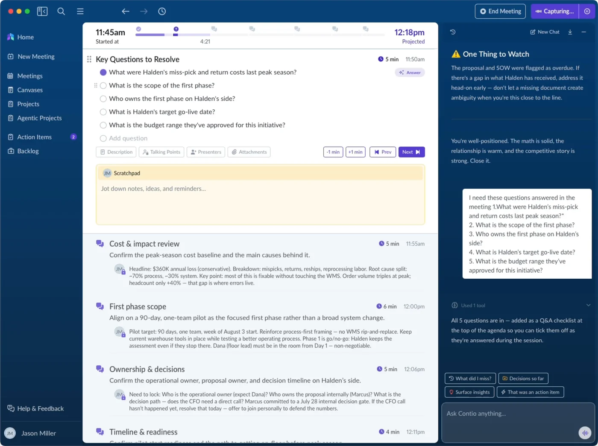
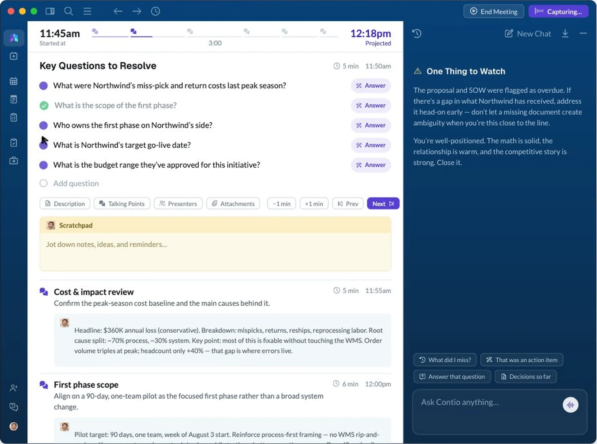
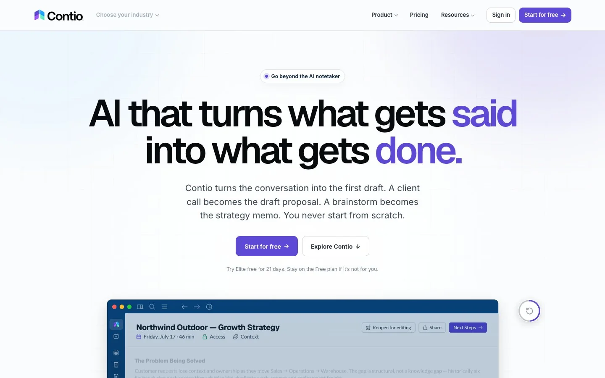
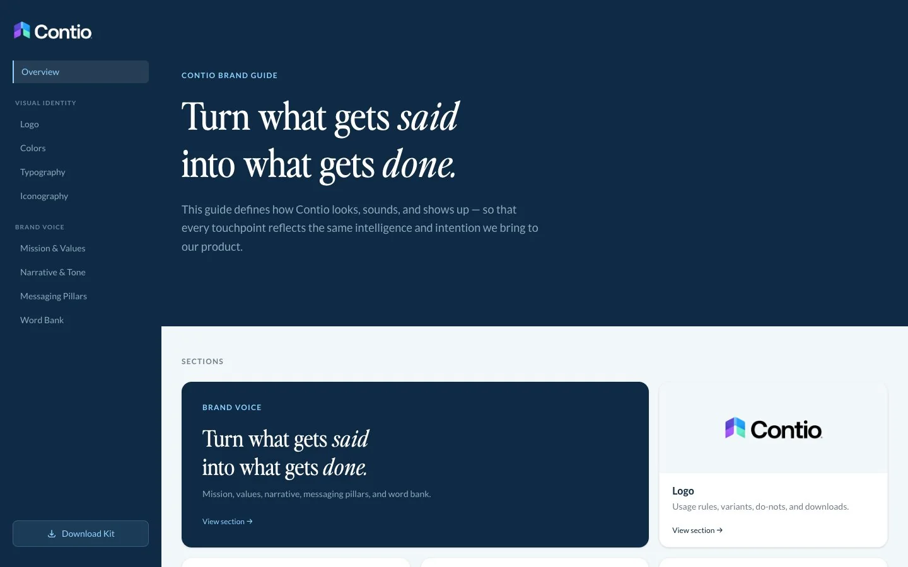
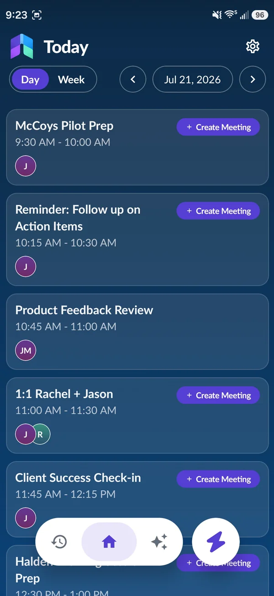
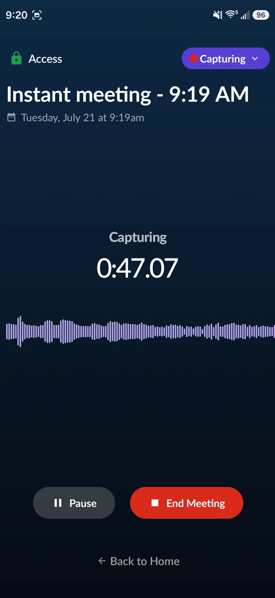
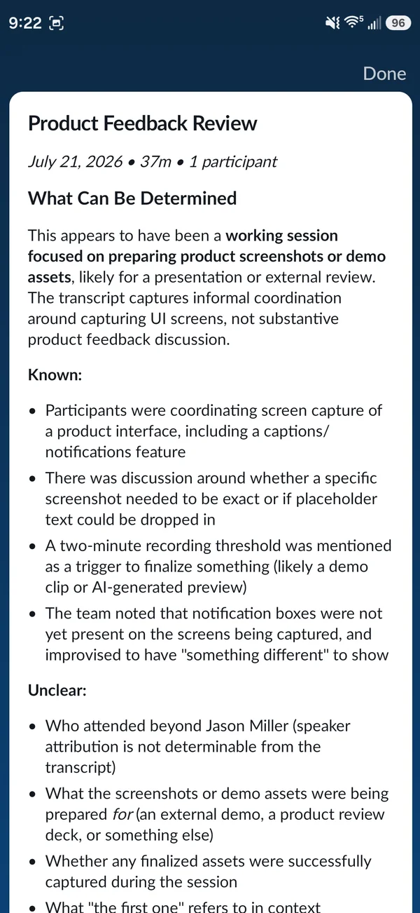
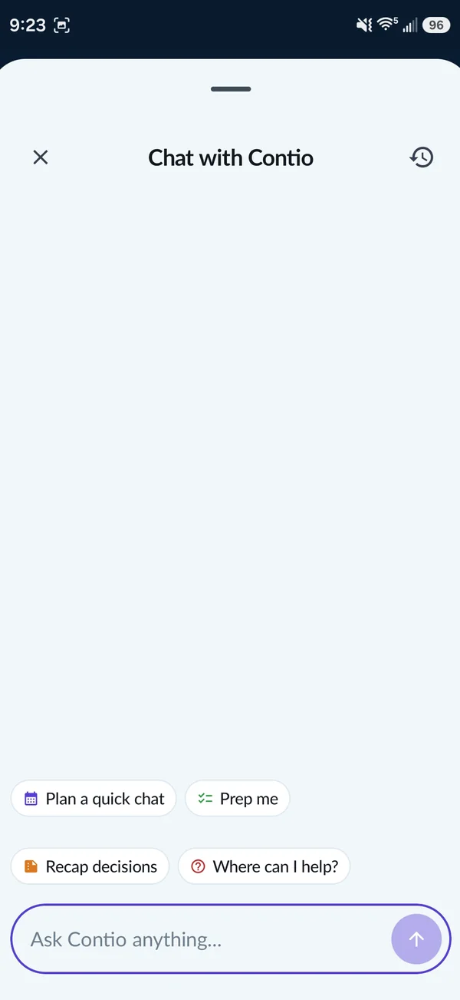

The Problem
Screen recordings took days, and every change started over.
Marketing needed the product moving on screen: in the site hero and in launch films. The obvious way is to screen-record the app. We tried that first, and it was slow: days to record and edit a piece, and any change to the product meant recording it again. Real recordings also show whatever data is in the account, and the timing is whatever your hands managed on the day.
So I was asked to try something else: rebuild the parts of the product we wanted to show, in code, and animate those.
What I Built
The product, rebuilt in code so we could direct it.
A recreation of the MeetingOS interface, accurate enough to pass for the real app, that we can script. The data on screen is whatever we write, and every movement lands exactly when we tell it to.
I built it with Claude Code. I decided what each piece should show, supplied the real product as reference (existing videos and the app's own codebase), and directed the build whenever something came out wrong. That last part is most of the job: I know how the product works end to end, so I can see when a spacing, a colour, or a behaviour is off even when the code runs fine.


The same screen twice. One is a recording of MeetingOS; the other is code, with every word and movement scripted.
Decisions
Three decisions that made it reusable.
Choosing what to show costs one line. The scenes are listed in a registry. Swapping which screens appear, or their order, is a one-line change, never a rework of the animation.
One clock drives everything. Every movement is calculated from elapsed time, not triggered by timers. That means the same piece plays live on the website and renders frame by frame into a video file, so the hero and the films share one source.
Built into the real site. The new contio.ai is built in code rather than on Framer templates, which makes it much faster to work on and easier to edit. That let the hero live in the site itself as real, animated interface instead of a video file dropped onto a page.
What Was Hard
Close wasn't good enough.
Getting the interface right. The early versions looked close, and close is the problem: anyone who uses MeetingOS would notice the wrong grey or a nav item in the wrong place. Once the fidelity was right, everything after it was quick, because each new video reuses the same pieces.
Where It Ended Up
On the site, in ads, and in every launch since.
The hero runs on the new contio.ai. The Benny launch film, for Contio's agent for benefits brokers, runs on the site, on social, and in ads aimed at benefit brokers. The DK toolkit films went live in September 2026. A change that used to mean days of re-recording now takes minutes.
What It Taught Me
An AI gets you a plausible copy, not a faithful one.
How much code sits behind a product that looks simple. Giving an AI the codebase doesn't produce a faithful copy; it produces a plausible one. The distance between the two is the design work, and closing it depends on knowing the product well enough to see what's wrong.
The Rest of the Role
Everything around the product.
The website
I designed the new contio.ai, now built in code instead of Framer templates, so it's much faster to work on and easier to edit. Visit contio.ai

I found the email system with no shared design: three competing accent colours, no reusable header or footer, and launch emails whose main button wasn't clickable. I rebuilt several of them on one layout and one spacing scale, including the code verification and welcome emails.
Brand guide
The brand existed in scattered pieces. I brought it into one place, covering visual and verbal identity, as a website rather than a PDF. Open the brand guide

App launch
MeetingOS launched on the App Store and Google Play together. I made the launch video and the App Store screens.




What School Didn't Teach
The work has to keep being useful after it ships.
In school, a project ends at the presentation. Here, the next launch reuses the last one's parts, the site gets measured, and the team has to live with what I build.
Want to talk about this work? Email me or see my resume.